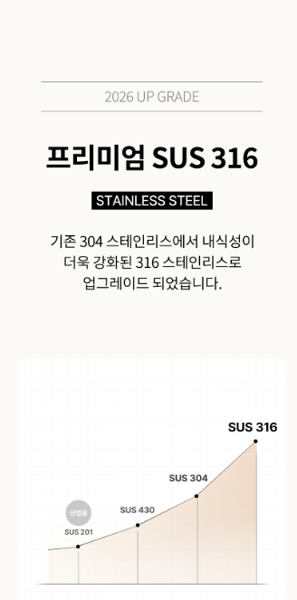
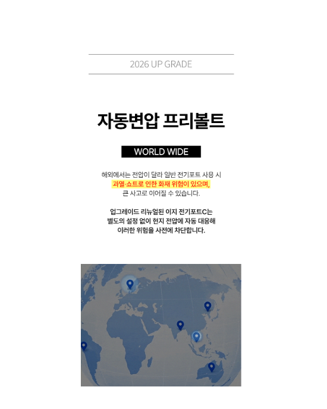

1. 보아르 휴대용 이지 전기포트는 어떤 제품일까?
보아르 휴대용 이지 전기포트는 필요한 양의 물을 간편하게 데우거나 끓일 수 있도록 휴대성을 고려한 전기포트입니다. 일반적인 대용량 주전자보다 이동과 보관이 편리한 제품을 찾는 분이라면 사용 환경에 맞는지 살펴볼 수 있습니다.
구매 핵심 포인트
휴대성보관 공간과 이동 편의성을 확인
용량한 번에 필요한 물의 양을 확인
전원사용 장소에 맞는 전원 조건 확인
세척내부 세척과 물때 관리 방법 확인
2. 휴대용 전기포트가 필요한 공간
휴대용 전기포트는 주방뿐 아니라 사무실이나 여행지처럼 따뜻한 물을 간편하게 준비해야 하는 공간에서 활용하기 좋습니다. 자주 이동하는 경우에는 제품 크기와 보관 방법까지 함께 살펴보는 것이 좋습니다.

3. 사용 편의성
전기포트는 버튼이나 조작 방식이 간단하고 사용 후 관리가 편리한지가 중요합니다. 제품별 조작 방식과 안전 기능, 물을 넣고 비우는 방법을 구매 전에 확인하면 실제 사용 시 편의성을 판단하는 데 도움이 됩니다.
4. 세척과 위생 관리
물을 반복해서 사용하는 제품은 내부에 물때가 생길 수 있으므로 정기적인 세척과 건조가 필요합니다. 세척 가능한 부분과 주의해야 할 부분을 제품 설명서에 따라 관리하는 것이 좋습니다.

5. 사용 장소와 전원 확인
집에서 사용할 때와 여행이나 사무실에서 사용할 때는 전원 환경이 다를 수 있습니다. 휴대용으로 사용할 예정이라면 제품의 전원 조건과 사용 가능한 환경을 미리 확인하세요.
6. 구매 전 체크리스트
- 정확한 제품명과 모델을 확인합니다.
- 필요한 물의 양에 맞는 용량인지 확인합니다.
- 제품의 크기와 휴대성을 확인합니다.
- 전원 방식과 사용 환경을 확인합니다.
- 세척과 물때 관리 방법을 확인합니다.
- 배송, 교환, 반품과 보증 조건을 확인합니다.
자주 묻는 질문
휴대용 전기포트는 어떤 점을 먼저 봐야 하나요?
용량과 크기, 전원 조건, 사용 방식과 세척 편의성을 먼저 확인하는 것이 좋습니다.
여행용으로 사용할 수 있나요?
실제 사용 가능 여부는 제품의 전원 조건과 사용 환경에 따라 달라질 수 있으므로 판매 페이지의 안내를 확인하세요.
세척할 때 주의할 점이 있나요?
전기 제품이므로 본체의 전원부에 물이 들어가지 않도록 주의하고 제품 설명서의 세척 방법을 따르는 것이 좋습니다.